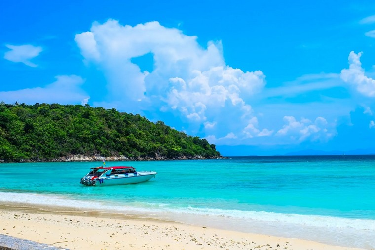

<!-- Artem Opolonyk, block 6 - Destinations -->
<section id="destinations" class="destinations">
    <div class="container">
        
        <h2 class="destinations__title">Destinations</h2>
        <div class="destinations__box">
            <div class="destinations__box-item">
                
                <div class="box-item-info">
                    <p class="box-item-name">Racha Yai</p>
                    <p class="box-item-text">
                        Ideal for beginners. Experienced divers come here only to get in
                        shape after long breaks between dives. Our most visited
                        destination. Only this year <span class="destination-counter">250</span> divers tried their
                        skills here.
                    </p>
                    <a href="https://en.wikipedia.org/wiki/List_of_islands_of_Thailand" target="_blank"
                        class="box-item-link">READ MORE</a>
                </div>
            </div>
            <div class="destinations__box-item reverse">
                
                <div class="box-item-info">
                    <p class="box-item-name">Anemone Reef</p>
                    <p class="box-item-text">
                        A limestone rock, which rises from a depth of 30 meters, its
                        eastern slope is a gentle descent to the sandy bottom, the western
                        is a sheer wall. The abundance of anemones and nutrient-rich water
                        attract an incredible amount of tropical fish to Anemone Reef.
                    </p>
                    <a href="https://en.wikipedia.org/wiki/Sea_anemone" target="_blank" class="box-item-link">READ
                        MORE</a>
                </div>
            </div>
            <div class="destinations__box-item">
                
                <div class="box-item-info">
                    <p class="box-item-name">King Cruiser</p>
                    <p class="box-item-text">
                        King Cruiser is a large car ferry that sank in 1997 after a
                        collision with the underwater part of Anemone Reef and turned into
                        an artificial coral reef. Only certified divers can dive at King
                        Cruiser. Perfect for those who like wreck diving and enjoy the
                        mysteries of the sank ships.
                    </p>
                    <a href="https://en.wikipedia.org/wiki/MS_King_Cruiser" target="_blank" class="box-item-link">READ
                        MORE</a>
                </div>
            </div>
        </div>
        <div class="destinations__button-place">
            <a href="#packages-block" class="destinations__button">DIVE MORE WITH PACKAGES</a>
        </div>
    </div>
</section>